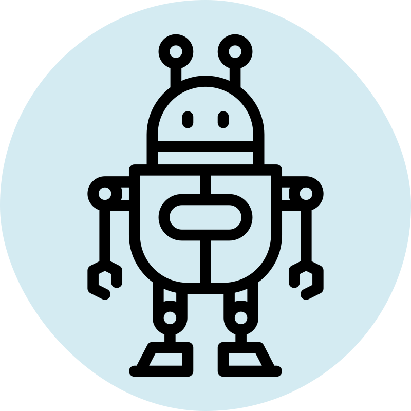

<nav class="bg-white border-gray-200">
	<div class="max-w-screen-xl flex flex-wrap items-center justify-between mx-auto p-4">
		<a routerLink="" class="flex items-center">
			
			<span class="self-center text-2xl font-semibold whitespace-nowrap">
				foodBot</span>
		</a>
		<button data-collapse-toggle="navbar-dropdown" type="button" class="inline-flex items-center p-2 w-10 h-10 justify-center text-sm text-gray-500 rounded-lg md:hidden hover:bg-gray-100 focus:outline-none focus:ring-2 focus:ring-gray-200" aria-controls="navbar-dropdown" aria-expanded="false">
			<span class="sr-only">Open main menu</span>
			<svg class="w-5 h-5" aria-hidden="true" xmlns="http://www.w3.org/2000/svg" fill="none" viewBox="0 0 17 14">
				<path stroke="currentColor" stroke-linecap="round" stroke-linejoin="round" stroke-width="2" d="M1 1h15M1 7h15M1 13h15" />
			</svg>
		</button>
		<div class="hidden w-full md:block md:w-auto" id="navbar-dropdown">
			<ul class="flex flex-col font-medium p-4 md:p-0 mt-4 border border-gray-100 rounded-lg bg-gray-50 md:flex-row md:space-x-8 md:mt-0 md:border-0 md:bg-white">
				<li>
					<a routerLink="" class="block py-2 pl-3 pr-4 rounded md:bg-transparent md:hover:text-blue-700 md:p-0"
						aria-current="page">
						Home</a>
				</li>
				<li>
					<a routerLink="menu" class="block py-2 pl-3 pr-4 rounded md:bg-transparent md:hover:text-blue-700 md:p-0"
						aria-current="page">
						Menu</a>
				</li>
				<li>
					<a routerLink="contact" class="block py-2 pl-3 pr-4 text-gray-900 rounded hover:bg-gray-100 md:hover:bg-transparent md:border-0 md:hover:text-blue-700 md:p-0">
						Contact</a>
				</li>
				<li>
					<a routerLink="" class="block py-2 pl-3 pr-4 text-gray-900 rounded hover:bg-gray-100 md:hover:bg-transparent md:border-0 md:hover:text-blue-700 md:p-0">
						About</a>
				</li>
			</ul>
		</div>
	</div>
</nav>
